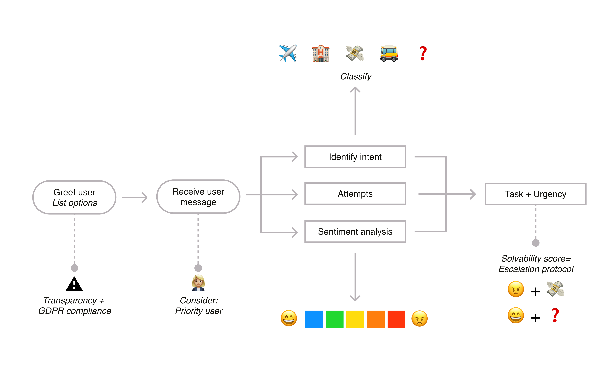
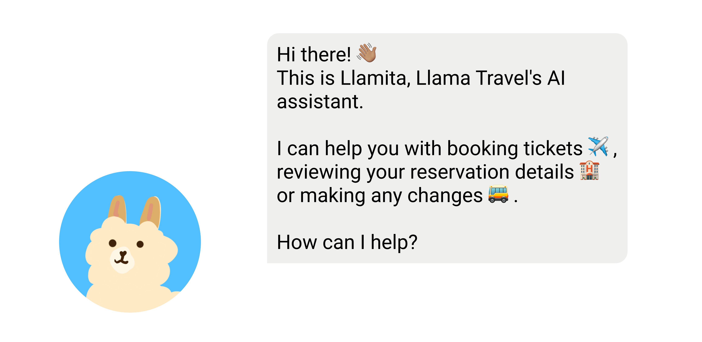
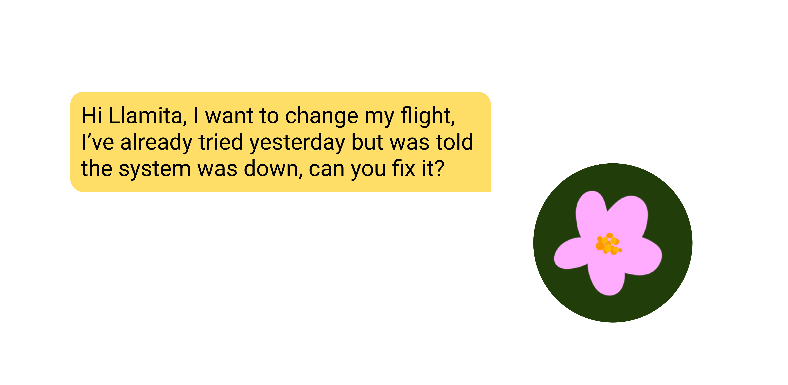
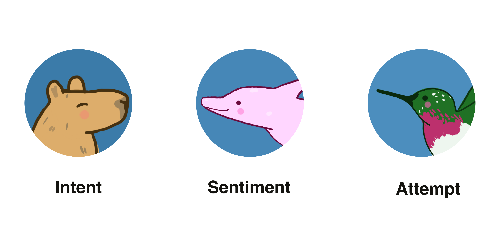
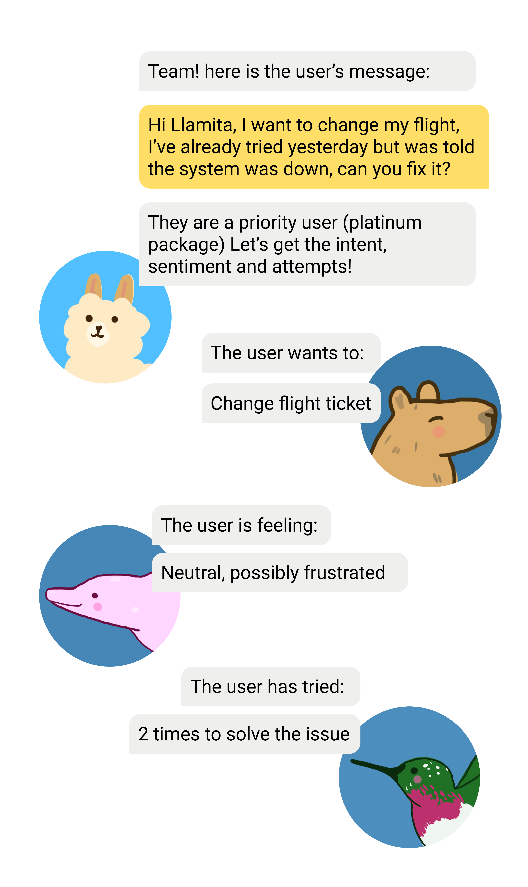

AI • Agents • LLM
August 31
Understanding how AI agents work and how they could work for you!
Agents—the word is in vogue nowadays—in fact
OpenAI declared 2025 was the year of
agents.
You might be wondering what they are and how you can
use them, but in fact, you might have already worked
with one already!
When I hear the word agent I kind of think of
spy movies—someone who is specialized in observing,
processing and communicating information—but also
someone who can make decisions on their own.
What makes them different than existing AI?
Well, unlike an LLM, an agent has the
autonomy to make decisions and act upon them.
Think: LLM can help you build and discuss
things as you 'chat' and you are actively engaging,
while the agent will handle the tasks it has
been given independently.
This autonomy gives it a lot of potential.
There are simple agents that handle one task,
like scheduling a meeting, and there are
multi-agent flows where multiple agents work
together; one main instruction tells the different
parts what to do and what input and outcome they
should expect. You can picture it as how
customer service at a big online electronics
shop would work.
Creating a good agent means thinking about the whole flow of information and giving clear instructions to each person in the team. It's just like running a smooth operations team.
I feel like these are a lot of general concepts and
a lot of technical terms. For me the best way to
wrap my head around how agents would be by
drawing a little diagram for a specific scenario...
maybe a Travel Agency with a Llama mascot.
Do you wanna see it?
Llama Travel, your gate way to Latin America!
Quick drawing by me :)
Let’s imagine we are building an agent for a travel agency, which we will call Llama Travel.
Llama Travel is super successful! But unfortunately, their customer support team is having issues handling a high volume of tickets. Could an agent help them?
Of course!
So, Llama Travel wants users to first interact with the agent and only escalate tickets to a human it can’t solve by itself.
We’re going to call their agent
Llamita.
I would divide Llamita's whole flow into three big
parts:
1) Assessing 2) Handling
3) Escalating.
For this blog post, we’ll focus specifically on the first section so we can be more thorough. In future posts, we can break down Handling and Escalating, sounds good?

Here is how the first part of the flow would look like.
This part is crucial to make sure we start off on a
good path.
Here we will greet the user and set expectations,
and set the stage for the rest of the flow.
In our case, it would be composed of four parts:
1.1 Welcome
1.2 Input
1.3 Classification
1.4 Scoring
Let's break them down:
We want to greet the user just like we would if we
were a Llama Travel employee.
For this, we would refer to their
brand manual and TOV guidelines.
Llama Travel is very friendly with their
customers, but they also choose a more serious tone
when needed. When we train the
welcome chat agent, we should add these
points in the instructions
We also need to comply with GDPR, so we need
to tell the user they’re interacting with
AI.
Uff—how do we help the user trust that the
AI can handle their request, if they are used
to interacting directly with customer service? Well,
we can set clear expectations... maybe something
like:
Hi there! This is Llamita, Llama Travel's AI assistant.
I can help you with booking tickets, reviewing your reservation details or making any changes.
How can I help?

Llamita AI assitant welcomes the user with a friendly tone
Next, the user will input their message—should the
answers vary depending on the user?
Yes and no. All users should have access to the same
service; however, if we have a
priority user (a customer that pays for a
higher tier of service), we should treat them
according to what their package offers.
Could there be a scenario where the user isn’t
logged in? Yes—
Login could depend on where Llamita is placed
in the customer flow. Depending on the
entry point, we can display different
information. Is the user coming from the
main page as a guest who’s just browsing? No
need to prompt them to register right away—let them
build trust and rapport with the
agent.
User accessing via their account page? The
user should already be logged in.
Once we know who the user is and how we can best service them, let’s look at their message for the next step.

Our example user sends their request
Let’s say the user said:
Hi Llamita,
I want to change my flight, I’ve already tried yesterday but was told the system was down, can you fix it?
There are a few things we need to extract from this
message:
What does the user want?
How are they feeling?
Have they tried this before?
For us as humans, this is pretty easy to
understand—they want to
change their plane tickets. We don’t see any
harsh words, so they’re not very angry, but since
they’ve already tried before, they might be slightly
frustrated.
Okay, but how do we train a computer to identify all
those words and turn them into something it can
understand?
We’ll need to use
natural language processing
techniques—basically, turning words into numbers so
the computer can understand them better.
What do we need then? We need to extract
intent = what does the user want,
sentiment analysis = how is the user feeling,
number of attempts = has the user tried
before?
In the case of Llamita, you can have three agents to determine each of those things—Llamita, the orchestration agent, after delivering the greeting and receiving the message, will send it to three specialized agents: Capybara (intent), Pink Dolphin (sentiment), and Hummingbird (attempt).
A combination of these results should give us a “score”—let’s break it down in the next step!

Our example user sends their request
After receiving the information from the specialized agents, Llamita can determine what task needs to be solved, how urgent the issue is, and how likely it is that we might need to escalate to a human.
Hey, we could even have a specialized agent that calculates this score:
A combined higher number will increase the chances
of Llamita needing to escalate to a human.
If escalation = 0 and
urgency = 0—Llamita can take this one!
If escalation = 1 and
urgency = 1—better tag in the support team.
Let’s look at a few scenarios to see how this would work:
So, I’m not going to give you the answers here. Try to solve these little support puzzles yourself, and let me know what scores you would give them!

Example of how Llamita calls the other agents for help.
Building agents like Llamita isn’t about replacing humans—it’s really about helping small teams handle more info, and letting them focus on the important stuff (like spotting trends and supporting users better).
For example, Llamita could have another specialized agent tracking if a service provider keeps getting negative reviews—this way, the support team can decide if they need to reach out or maybe stop recommending that provider on the site.
But we can go deeper into that part of the flow next
time—stay tuned!
What do you think? What should I focus on next?
Do you have support puzzle thoughts (or secret agent stories) of your own? Hit me up, I’d love to hear them!
Let me know—shoot me an email! 😊
📩
sifuentesanita@gmail.com